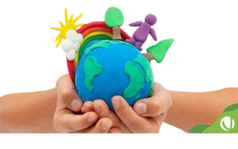

Solos Tech
Educação ecológica e preservação ambiental para um futuro sustentável.
Sobre Nós
A educação ecológica tem como objetivo aumentar a conscientização sobre a preservação do meio ambiente, promovendo práticas sustentáveis e comportamentos responsáveis. Quando combinada com tecnologia, como um sensor de luminosidade e um monitor de qualidade do ar, ela se torna uma ferramenta poderosa para o aprendizado e a conscientização.
A educação ecológica visa envolver indivíduos e comunidades em atividades que fomentem a compreensão dos ecossistemas e da importância de sua preservação. Este tipo de educação abrange diversas práticas, como a reciclagem, a conservação de recursos naturais, e o estudo de impactos ambientais.
Integrar a educação ecológica com tecnologia através de sensores de luminosidade e monitores de qualidade do ar é uma maneira eficaz de promover a conscientização ambiental e ensinar práticas sustentáveis. Essa abordagem não só proporciona um aprendizado prático e envolvente, mas também empodera indivíduos e comunidades a agir em prol da preservação do meio ambiente.
Missão
A missão da Solos Tech é clara e poderosa: educar a sociedade sobre práticas ecológicas e sustentáveis para garantir que as futuras gerações possam desfrutar de um planeta saudável.
A empresa está comprometida em disseminar conhecimento e promover ações que contribuam para a conservação do meio ambiente.
Isso inclui desenvolver recursos educativos inovadores, realizar campanhas de conscientização, e apoiar iniciativas que incentivem a sustentabilidade em todas as suas formas.
Ao empoderar indivíduos e comunidades com as ferramentas e informações necessárias, a Solos Tech busca criar um impacto positivo duradouro na saúde do nosso planeta.
Valores
 Respeito ao meio ambiente:
Respeito ao meio ambiente:
Respeito ao meio ambiente significa tratar a natureza e seus recursos com a mesma consideração e cuidado que damos a qualquer bem valioso. Envolve reconhecer a interdependência entre humanos e o ambiente, e agir de maneira a minimizar o impacto negativo das nossas atividades.- Educação sustentável:
Educação sustentável é um processo que capacita indivíduos a adquirir conhecimentos, habilidades e valores necessários para tomar decisões conscientes e responsáveis sobre o meio ambiente.  Inovação em soluções ecológicas:
Inovação em soluções ecológicas:
Inovar em soluções ecológicas significa desenvolver tecnologias e métodos que ajudam a preservar e melhorar o meio ambiente. É sobre encontrar novas maneiras de reduzir a poluição, economizar recursos naturais e promover a sustentabilidadeEngajamento Comunitário:
Projetos de Ação
Alunos desenvolvem e implementam projetos em suas comunidades, como campanhas para reduzir a poluição do ar e o consumo de energia.
Organizam eventos para compartilhar conhecimentos e conscientizar a comunidade sobre a importância da sustentabilidade.